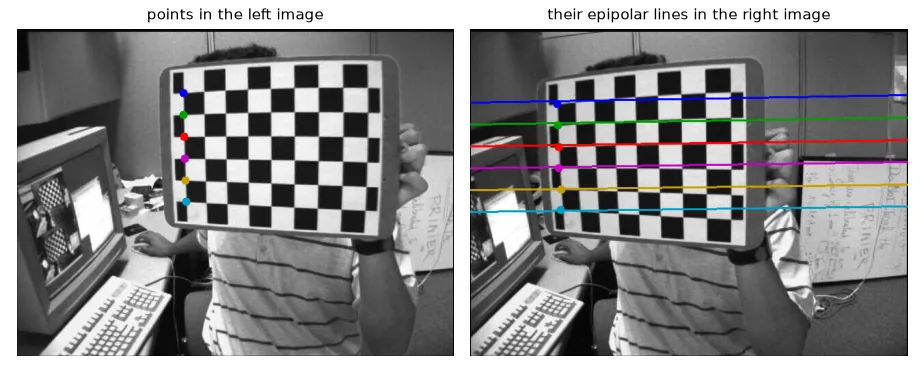
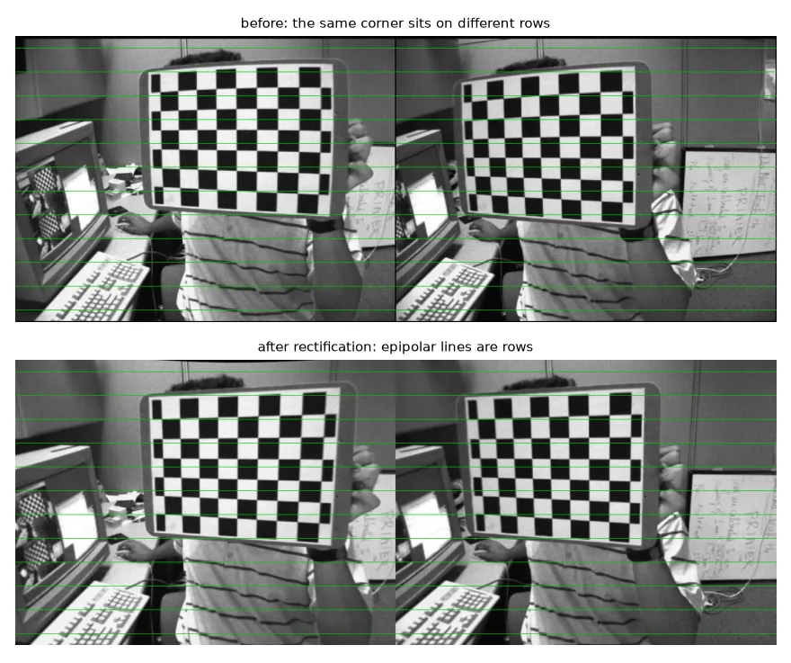
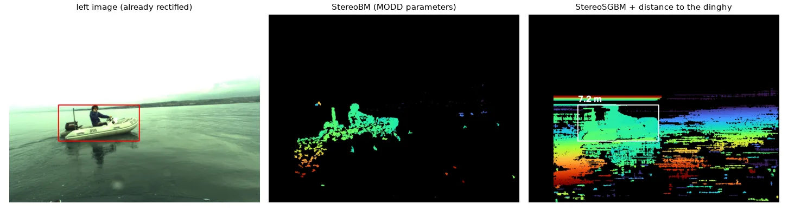
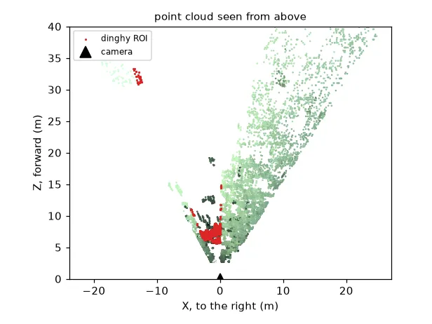

Depth from two eyes#
Two cameras side by side, separated by a baseline \(B\), see the same point at slightly different horizontal positions. The difference is the disparity \(d = u_\text{left} - u_\text{right}\), and similar triangles give the depth directly:
with \(f\) in pixels and \(B\) in metres. Near objects have large disparity, far ones small. Since \(d\) is measured with ~1 px error, the depth error grows like \(Z^2\): stereo is precise up close and poor far away.
The hard part is finding, for each left pixel, the same point in the right image. Epipolar geometry makes it a 1-D search.
Epipolar geometry#
The ray of a left pixel, seen from the right camera, is a line: the epipolar line. Its match can only be on that line. Algebraically, corresponding points satisfy
where \(F\) is the \(3 \times 3\) fundamental matrix (in normalised coordinates it becomes the essential matrix \(E = [\mathbf{t}]_\times R\), which we use in lesson 16).
Part 1 — calibrating a stereo pair#
Calibrate each camera alone (lesson 14), then estimate the rotation \(R\) and translation \(T\) between them with images where both see the board, keeping the intrinsics fixed:
PATTERN = (9, 6)
objp = np.zeros((PATTERN[0] * PATTERN[1], 3), np.float32)
objp[:, :2] = np.mgrid[0:PATTERN[0], 0:PATTERN[1]].T.reshape(-1, 2)
lefts = sorted(glob.glob(str(U.path("stereo/left/*.jpg"))))
rights = sorted(glob.glob(str(U.path("stereo/right/*.jpg"))))
obj_pts, left_pts, right_pts = [], [], []
for fl, fr in zip(lefts, rights):
gl = cv2.imread(fl, cv2.IMREAD_GRAYSCALE)
gr = cv2.imread(fr, cv2.IMREAD_GRAYSCALE)
ok_l, cl = cv2.findChessboardCorners(gl, PATTERN)
ok_r, cr = cv2.findChessboardCorners(gr, PATTERN)
if ok_l and ok_r: # the board must be seen by *both* cameras
crit = (cv2.TERM_CRITERIA_EPS + cv2.TERM_CRITERIA_MAX_ITER, 30, 0.001)
left_pts.append(cv2.cornerSubPix(gl, cl, (11, 11), (-1, -1), crit))
right_pts.append(cv2.cornerSubPix(gr, cr, (11, 11), (-1, -1), crit))
obj_pts.append(objp)
size = gl.shape[::-1]
# 1. intrinsics of each camera alone
_, K1, D1, _, _ = cv2.calibrateCamera(obj_pts, left_pts, size, None, None)
_, K2, D2, _, _ = cv2.calibrateCamera(obj_pts, right_pts, size, None, None)
# 2. extrinsics between them, keeping the intrinsics fixed
rms, K1, D1, K2, D2, R, T, E, F = cv2.stereoCalibrate(
obj_pts, left_pts, right_pts, K1, D1, K2, D2, size, flags=cv2.CALIB_FIX_INTRINSIC)
13 stereo pairs, RMS 0.448 px
T = [-3.344 0.042 0.053] -> baseline 3.345 squares
\(R\) is almost the identity (the cameras are parallel) and \(T\) is mostly along \(x\): the right camera is 3.3 chessboard squares to the right.
What I changed from my first version
My first version called stereoCalibrate with no initial intrinsics and flags=0, so it estimated 30+ parameters at once from 13 image pairs. Calibrating each camera first and then using CALIB_FIX_INTRINSIC is more stable.
img_l = cv2.imread(lefts[0], cv2.IMREAD_GRAYSCALE)
img_r = cv2.imread(rights[0], cv2.IMREAD_GRAYSCALE)
pts_l = left_pts[0][::9].reshape(-1, 2) # a few corners in the left image
lines_r = cv2.computeCorrespondEpilines(pts_l.reshape(-1, 1, 2), 1, F).reshape(-1, 3) # a x + b y + c = 0

Rectification#
If we warp both images so that epipolar lines become the same image rows, matching is a search along a row. That is rectification: a homography per image computed by stereoRectify, applied (together with undistortion) with remap.
R1, R2, P1, P2, Q, roi1, roi2 = cv2.stereoRectify(K1, D1, K2, D2, size, R, T, alpha=0)
map_l = cv2.initUndistortRectifyMap(K1, D1, R1, P1, size, cv2.CV_32FC1)
map_r = cv2.initUndistortRectifyMap(K2, D2, R2, P2, size, cv2.CV_32FC1)
rect_l = cv2.remap(img_l, *map_l, cv2.INTER_LINEAR)
rect_r = cv2.remap(img_r, *map_r, cv2.INTER_LINEAR)

stereoRectify also returns \(P_1, P_2\) (the new projection matrices, \(f\) is P1[0, 0]) and \(Q\), the matrix that turns a disparity into a 3-D point.
Part 2 — depth on the water#
The second dataset is a frame of the MODD maritime dataset, filmed from a small boat — the setting of my research project on autonomous boats.
Check before you rectify#
left = U.imread("modd/00013824L.jpg")
right = U.imread("modd/00013824R.jpg")
gray_l = cv2.cvtColor(left, cv2.COLOR_BGR2GRAY)
gray_r = cv2.cvtColor(right, cv2.COLOR_BGR2GRAY)
def row_offsets(img_l, img_r):
"""Vertical offset of RANSAC-filtered ORB matches: ~0 everywhere if the pair is rectified."""
orb = cv2.ORB_create(3000)
k1, d1 = orb.detectAndCompute(img_l, None)
k2, d2 = orb.detectAndCompute(img_r, None)
m = cv2.BFMatcher(cv2.NORM_HAMMING, crossCheck=True).match(d1, d2)
p1 = np.float32([k1[x.queryIdx].pt for x in m])
p2 = np.float32([k2[x.trainIdx].pt for x in m])
_, inl = cv2.findFundamentalMat(p1, p2, cv2.FM_RANSAC, 1.0)
inl = inl.ravel() > 0
return p1[inl, 1] - p2[inl, 1], p1[inl, 0] - p2[inl, 0]
dy, dx = row_offsets(gray_l, gray_r)
print("dy percentiles (5, 50, 95):", np.percentile(dy, [5, 50, 95]).round(2)) # [-1, 0, 0]
dy percentiles (5, 50, 95): [-1. 0. 0.]
The matched features are already on the same rows: the MODD frames are distributed rectified. Rectifying them again with the raw calibration would break them (I tried: no feature stayed within 3 rows of its match). Always check the row offset of a few matches before computing disparities — it takes five lines and saves hours.
# The MODD frames are *already rectified*: rectifying them again with the raw calibration
# would break them. We only need the focal length (px) and the baseline (m).
fs = cv2.FileStorage(str(U.path("modd/calibration.yaml")), cv2.FILE_STORAGE_READ)
K = fs.getNode("M1").mat()
T = fs.getNode("T").mat() # millimetres
fs.release()
f_px = K[0, 0] # ~958 px
cx, cy = K[0, 2], K[1, 2]
baseline_m = np.linalg.norm(T) / 1000 # 0.356 m
# reprojection matrix for a rectified pair: [X Y Z W]^T = Q [u v d 1]^T
Q = np.float64([[1, 0, 0, -cx],
[0, 1, 0, -cy],
[0, 0, 0, f_px],
[0, 0, 1 / baseline_m, 0]])
Disparity: block matching and SGBM#
StereoBM compares small blocks along each row (sum of absolute differences) and keeps the best. Fast, but it fails on weak texture. StereoSGBM (semi-global matching) adds a smoothness cost along several directions: P1 penalises disparity changes of 1 between neighbours, P2 larger jumps. It is slower and much denser.
fs = cv2.FileStorage(str(U.path("modd/stereo-method.yaml")), cv2.FILE_STORAGE_READ)
param = {k: int(fs.getNode(k).real()) for k in
["PreFilterSize", "PreFilterCap", "SADWindowSize", "MinDisparity", "NumDisparities",
"TextureThreshold", "UniquenessRatio", "SpeckleWindowSize", "SpeckleRange", "Disp12MaxDiff"]}
fs.release()
bm = cv2.StereoBM_create(numDisparities=param["NumDisparities"], blockSize=param["SADWindowSize"])
bm.setPreFilterSize(param["PreFilterSize"])
bm.setPreFilterCap(param["PreFilterCap"])
bm.setTextureThreshold(param["TextureThreshold"])
bm.setUniquenessRatio(param["UniquenessRatio"])
bm.setSpeckleWindowSize(param["SpeckleWindowSize"])
bm.setSpeckleRange(param["SpeckleRange"])
bm.setDisp12MaxDiff(param["Disp12MaxDiff"])
block = 5
sgbm = cv2.StereoSGBM_create(minDisparity=0, numDisparities=128, blockSize=block,
P1=8 * 3 * block ** 2, P2=32 * 3 * block ** 2, # smoothness penalties
uniquenessRatio=10, speckleWindowSize=100, speckleRange=2,
disp12MaxDiff=1, mode=cv2.STEREO_SGBM_MODE_SGBM_3WAY)
# compute() returns fixed-point disparities (x16); invalid pixels are negative
disp_bm = bm.compute(gray_l, gray_r).astype(np.float32) / 16
disp = sgbm.compute(gray_l, gray_r).astype(np.float32) / 16
valid = disp > 0
Disparities are fixed-point
compute() returns int16 values multiplied by 16. Divide by 16 before using them, and treat values ≤ 0 as invalid.
The distance to the dinghy#
Given a bounding box (from a detector like YOLO, in my project), take the median disparity inside it — the box also contains water and sky, and the median ignores them — and apply \(Z = fB/d\):
x, y, w, h = 252, 461, 412, 184 # the dinghy (e.g. a YOLO bounding box)
roi_disp = disp[y:y + h, x:x + w]
d_obj = np.median(roi_disp[roi_disp > 0]) # median: robust to holes and to background pixels
Z = f_px * baseline_m / d_obj # depth = f B / d
X = (x + w / 2 - cx) * Z / f_px # lateral offset of the box centre
dinghy: median disparity 47.3 px -> depth 7.21 m, -1.49 m to the side
The dinghy's disparity (47 px) matches the median horizontal offset of the ORB matches (46 px) from the rectification check — two independent measurements agreeing.

Point clouds#
\(Q\) turns every \((u, v, d)\) into \((X, Y, Z)\); reprojectImageTo3D applies it to the whole map. For a rectified pair it is simply
points = cv2.reprojectImageTo3D(disp, Q) # metres, because the baseline is in metres
colors = cv2.cvtColor(rect_l, cv2.COLOR_BGR2RGB)
mask = valid & (points[..., 2] > 0) & (points[..., 2] < 40)
xyz, rgb = points[mask], colors[mask]
def write_ply(path, xyz, rgb):
header = (f"ply\nformat ascii 1.0\nelement vertex {len(xyz)}\n"
"property float x\nproperty float y\nproperty float z\n"
"property uchar red\nproperty uchar green\nproperty uchar blue\nend_header\n")
with open(path, "w") as f:
f.write(header)
np.savetxt(f, np.hstack([xyz, rgb]), fmt="%.4f %.4f %.4f %d %d %d")
# write_ply("boat.ply", xyz, rgb) # open it in MeshLab or CloudCompare

What I changed from my first version
My first point cloud reprojected the colour-mapped, normalised disparity image (converted back to gray) instead of the real disparity, so the depths were meaningless. reprojectImageTo3D needs the float disparity in pixels.
Georeferencing#
The boat knows where it is (GPS, in UTM coordinates) and where it points (magnetometer + local magnetic declination). The object's bearing is the boat's heading plus the object's angle in the image, \(\operatorname{atan2}(X, Z)\); moving distance metres along it gives the object's position. Doing the offset in UTM (metres) and converting to latitude/longitude once with pyproj avoids the "1° ≈ 111 km" approximations:
utm_e, utm_n = np.loadtxt(U.path("modd/gps.txt")) # boat position, UTM zone 33 N (metres)
mag_x, mag_y, _ = np.loadtxt(U.path("modd/imu.txt")) # magnetometer reading
declination = 4.41 # degrees, Gulf of Koper
heading = np.degrees(-np.arctan2(mag_y, mag_x)) + declination # where the camera points (deg from north)
bearing = heading + np.degrees(np.arctan2(X, Z)) # add the object's angle in the image
distance = np.hypot(X, Z) # X, Z of the dinghy, from the ROI step
obj_e = utm_e + distance * np.sin(np.radians(bearing)) # metres east
obj_n = utm_n + distance * np.cos(np.radians(bearing)) # metres north
to_wgs84 = Transformer.from_crs("EPSG:32633", "EPSG:4326", always_xy=True)
boat_lon, boat_lat = to_wgs84.transform(utm_e, utm_n)
obj_lon, obj_lat = to_wgs84.transform(obj_e, obj_n)
boat 45.547620, 13.705387
object 45.547674, 13.705441 (7.4 m at bearing 35.7 deg)
This is the pipeline of my boat perception project, where it runs on every frame with YOLO detections.
Exercises#
- Plot depth error vs depth for a 1 px disparity error with this camera (\(f = 958\) px, \(B = 0.356\) m). At what distance is the error 1 m?
- Tune SGBM (
blockSize,uniquenessRatio,P1,P2) to get more valid pixels on the water without noise. - Compute the dinghy's depth from the ORB matches inside its box only, without any disparity map.